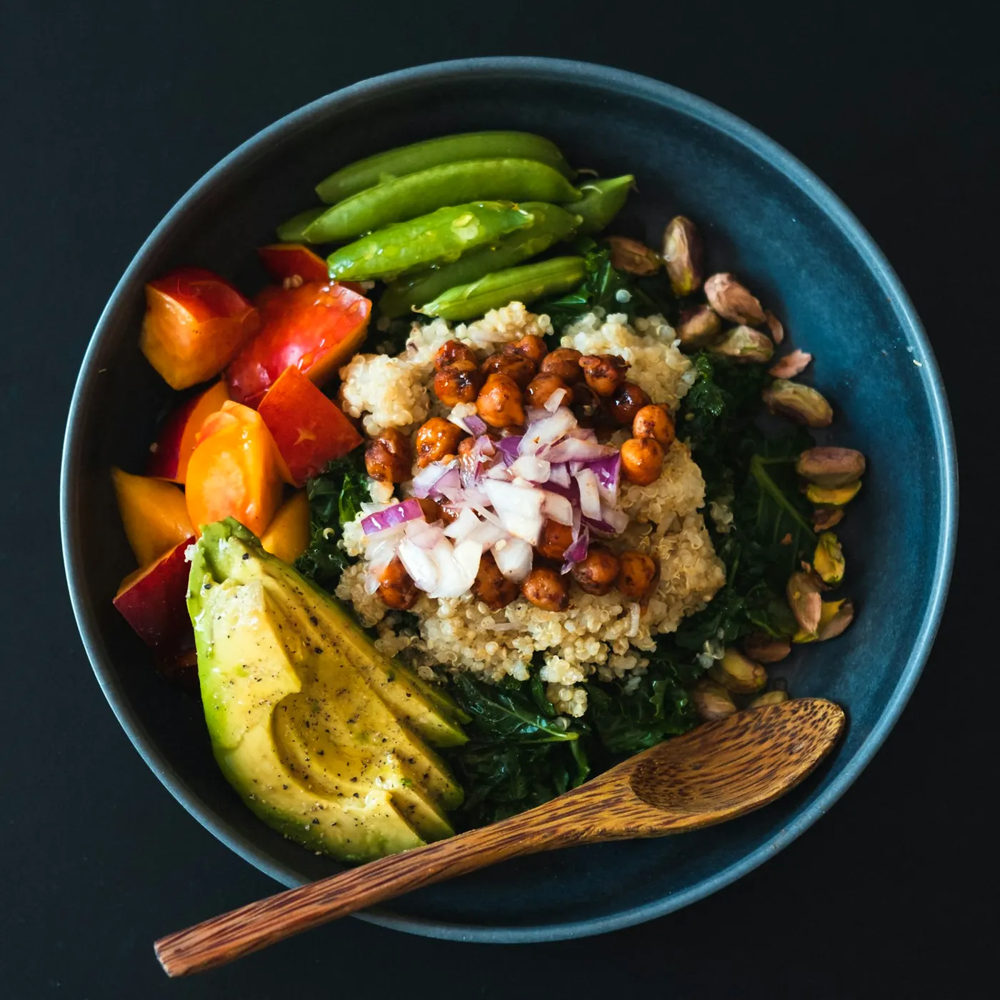

100% vegetarian · 6 continents
Find your dish.
The whole world's vegetarian kitchen, in one book.
Scroll to cook

100% vegetarian · 6 continents
The whole world's vegetarian kitchen, in one book.
Scroll to cook
The journey
Browse
Hand-picked
 IndiaPaneer Butter Masala35 min · MediumWhat you needPaneer, Tamatar, Pyaaz, Kaju, AdrakOpen recipe →
IndiaPaneer Butter Masala35 min · MediumWhat you needPaneer, Tamatar, Pyaaz, Kaju, AdrakOpen recipe → JapanAvocado Cucumber Maki45 min · HardWhat you needChawal, Nori sheets, Avocado, Kheera, GajarOpen recipe →
JapanAvocado Cucumber Maki45 min · HardWhat you needChawal, Nori sheets, Avocado, Kheera, GajarOpen recipe → LebanonFalafel30 min · MediumWhat you needKabuli chana, Pyaaz, Lehsun, Parsley, Hara dhaniyaOpen recipe →
LebanonFalafel30 min · MediumWhat you needKabuli chana, Pyaaz, Lehsun, Parsley, Hara dhaniyaOpen recipe → MexicoChickpea Tacos25 min · Easy · Vegetarian versionWhat you needTortilla, Kabuli chana, Shimla mirch, Pyaaz, TamatarOpen recipe →
MexicoChickpea Tacos25 min · Easy · Vegetarian versionWhat you needTortilla, Kabuli chana, Shimla mirch, Pyaaz, TamatarOpen recipe → ItalyTomato Bruschetta15 min · EasyWhat you needBaguette ya kadak bread, Tamatar, Lehsun, Fresh basilOpen recipe →
ItalyTomato Bruschetta15 min · EasyWhat you needBaguette ya kadak bread, Tamatar, Lehsun, Fresh basilOpen recipe → VenezuelaCheese Arepas30 min · MediumWhat you needMakke ka bareek pre-cooked atta, Mozzarella cheese, MakkhanOpen recipe →
VenezuelaCheese Arepas30 min · MediumWhat you needMakke ka bareek pre-cooked atta, Mozzarella cheese, MakkhanOpen recipe → ChinaVegetable Spring Rolls45 min · MediumWhat you needMaida, Patta gobhi, Gajar, Shimla mirch, Hara pyaazOpen recipe →
ChinaVegetable Spring Rolls45 min · MediumWhat you needMaida, Patta gobhi, Gajar, Shimla mirch, Hara pyaazOpen recipe → United StatesThree Bean Chili40 min · Easy · Vegetarian versionWhat you needRajma, Black beans, Kabuli chana, Pyaaz, Shimla mirchOpen recipe →
United StatesThree Bean Chili40 min · Easy · Vegetarian versionWhat you needRajma, Black beans, Kabuli chana, Pyaaz, Shimla mirchOpen recipe →
The fridge test
We'll tell you what you can cook right now.
0 recipes you can make
See them